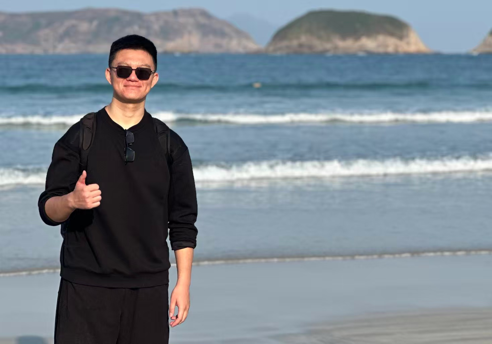
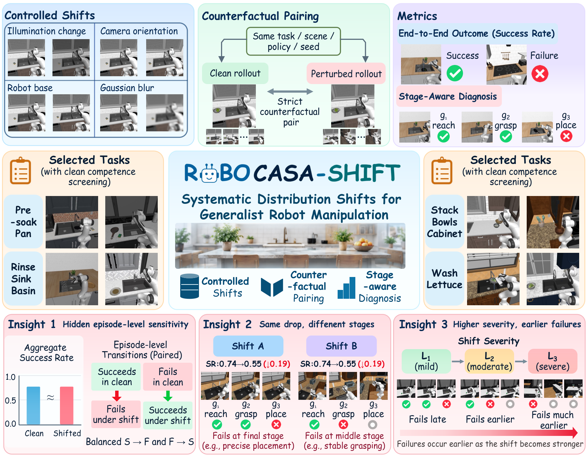
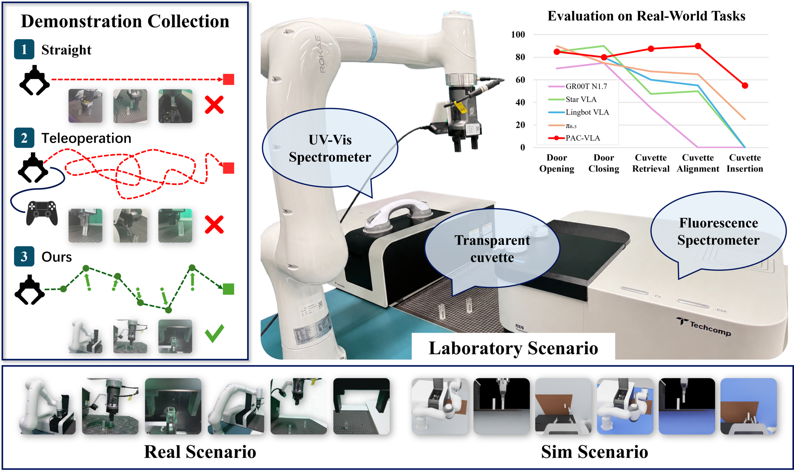
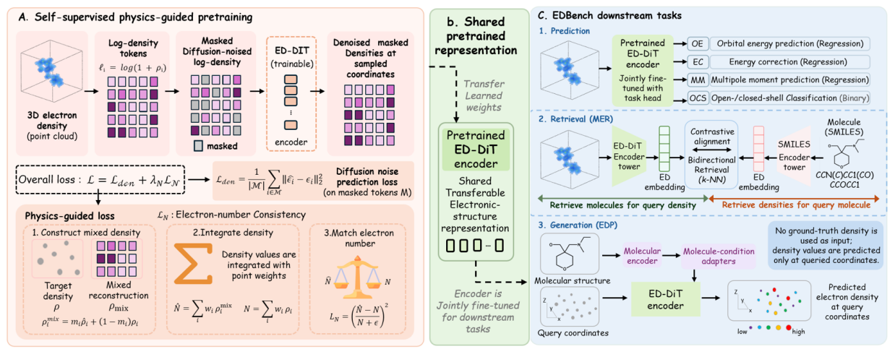
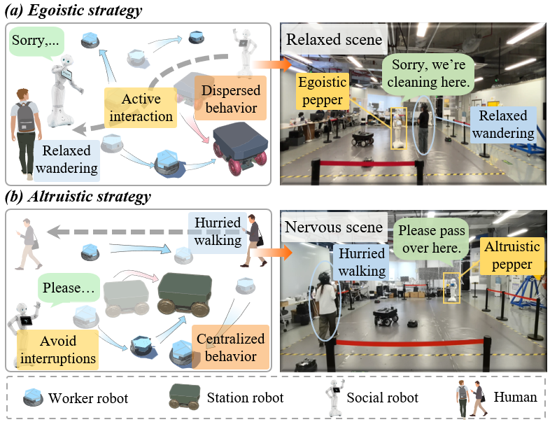

Haocheng (Rex) WangMaster Student | Seeking Ph.D. Opportunities
Chinese University of Hong Kong, Shenzhen |
 |


Biography
I received my Master's degree in Artificial Intelligence and Robotics from CUHKSZ in July 2026. During my master's study, I was supervised by Yuan Gao and Tin Lun LAM. I obtained my Bachelor's Degree from Beihang University in 2024. I used to be an intern at Shenzhen AIRS Laboratory in 2025. From April to June 2026, I worked as a research intern at the BigEye Lab, Tsinghua University, under the supervision of Postdoc Sen Cui. Since July 2026, I have been working as a Research Assistant at Shenzhen Loop Area Institute, where I am advised by Prof. Ben Fei from CUHK.
I have long been interested in enabling robots to autonomously explore and understand the physical world, as well as in natural human-robot interaction. This interest has motivated me to explore related areas such as robotics, reinforcement learning, world models, and multi-robot collaboration. During my undergraduate studies, I worked on bio-inspired underwater robotics and spatial perception for autonomous driving. During my master's studies, I focused on heterogeneous multi-robot collaboration. Since 2025, I have become particularly interested in realizing physical intelligence through world models and robotic systems. For my Ph.D., I hope to further pursue this direction during my Ph.D. study.
I am currently seeking Ph.D. opportunities in Embodied AI, world model and related areas.
Please feel free to rearch out for potential collaboration
News
- [07/2026] Graduated from The Chinese University of Hong Kong, Shenzhen .
- [06/2026] Attended ICRA 2026 Vienna .
- [01/2026] One paper was accepted by ICRA 2026 .
- [06/2024] Graduated from Beihang University .
Internship
|
Shenzhen Loop Area Institute Jul. 2026 - Present, Shenzhen, China closely worked with Ben Fei Topic: Embodied AI for Science and Robot Manipulation |
|
|
TsingHua BigEye Laboratory Apr. 2026 - Jun. 2026, Beijing, China closely worked with Sen Cui Topic: Physical World Model |
|
|
Shenzhen AIRS Lab Mar. 2025 - Feb. 2026, Shenzhen, China closely worked with Yuan Gao Topic: Heterogeneous Multi Robot Collaboration |
|
|
NXROBO Sep. 2024 - Dec. 2024, NXROBO, ROS Intern, Shenzhen, China |
|
Education
|
Chinese University of Hong Kong, Shenzhen, China Master of Artificial Intelligence and Robotics Advisor: Prof. Yuan Gao Sep. 2024 - Jun. 2026 |
|
|
Beihang Univesity, China Bachelor of Automation Sep. 2020 - Jun. 2024
|
Selected Publications
|
 |
RoboCasa-Shift: Stage-Aware Robustness Evaluation of Vision-Language-Action Policies in Long-Horizon Household Manipulation Preprint ArxivHaocheng Wang, Youquan Liu, Weiyu Guo, Aokai Zhang, Donghang Wu, Hongyu Liu, Sha Zhang, Weidong Yang, Ben Fei |
|
 |
PAC-VLA: A Precision-Aware Vision-Language-Action Framework for Automated Scientific Characterization Preprint ArxivAokai Zhang*, Haobo Wang*, Zhihui Wang, Yuxing Wu, Haocheng Wang, Kaizhong Mao, Ben Fei, Weiyu Guo |
|
 |
ED-DiT: Physics-Guided Diffusion Pretraining for Transferable Molecular Representations from Electron Density Preprint ArxivShuang Liang*, Haocheng Wang, Jiayi Song, Shuquan Ye, Ben Fei [paper] |
|
 |
Emergent Co-Adaptive Strategies in Heterogeneous Multi-Robot Systems via Meta-Learning ICRA 2026Haocheng Wang*, Tin Lun Lam, Jianwang Zhai, Xvchun He, Lin Wang, Yuan Gao [paper] |
CV
You can download my full CV here (waiting): Download CV (PDF)